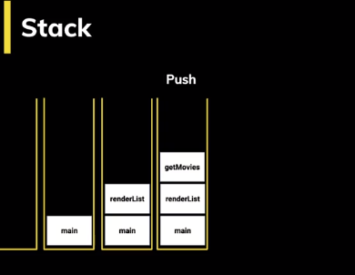
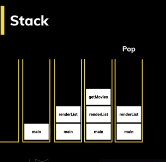

Event Loop
El Event Loop hace que Javascript parezca ser multihilo a
pesar de que corre en un solo proceso.
Javascript se organiza usando las siguientes estructuras de datos:
-
Stack.
Va apilando de forma organizada las diferentes
instrucciones que se llaman. Lleva así un rastro de dónde está el
programa, en que punto de ejecución nos encontramos.
Entra procesos al stack
 Sale procesos
-
Memory Heap.
De forma desorganizada se guarda información de las variables
y del scope.
-
Schedule Tasks.
Aquí se agregan a la cola, las tareas programadas para su ejecución.
-
Task Queue.
Aquí se agregan las tares que ya están listas
para pasar al stack y ser ejecutadas. El stack debe estar vacío para
que esto suceda.
-
MicroTask Queue.
Aquí se agregan las promesas. Esta Queue es la que tiene mayor prioridad.
El Event Loop es un loop que está ejecutando todo el tiempo y pasa
periódicamente revisando las queues y el stack moviendo tareas entre estas
dos estructuras.